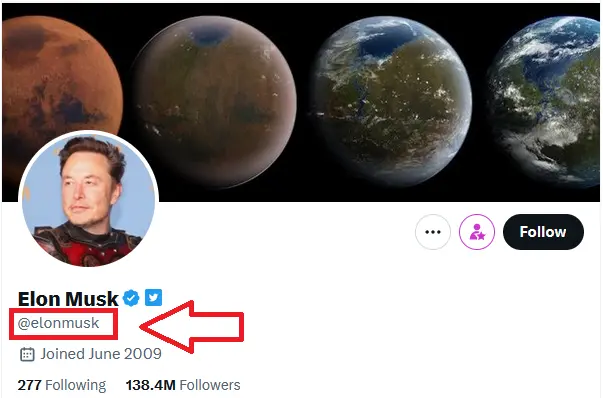

How to Make Fake Tweets without Photoshop
Have you ever wanted to create a fake tweet of twitter for a prank, a joke, or to make a point, but didn't have Photoshop skills? Well, there's good news for you.
Fake Tweet Generator with Blue,Grey and Gold Badges
Before we dive into the tools, let's understand the basics of what makes a tweet look real. There are three main components to a tweet: the profile picture, the username, and the tweet itself.
Before Fake Tweet Generation, Follow the Given Steps
1. Choosing a Profile Picture
The profile picture is the small image that appears next to the tweet. To make a convincing fake tweet you'll want to choose a profile picture that looks similar to the one used by the real user.

You can find profile pictures by doing a Google image search or by using a site like Pexels or Unsplash.
2. Creating a Username
The username is the name that appears next to the profile picture. To create a convincing fake tweet you'll want to use a username that looks similar to the real user's username. You can do this by adding an extra character, using a similar-sounding name, or using a variation of the real name.
3. Crafting the Tweet
The tweet itself is the message that appears in the tweet box. To create a convincing fake tweet you'll want to use the same language, tone, and writing style as the real user.
You can do this by looking at their previous tweets and imitating their style.
Tools to Create a Fake Tweet
- Fake TW
- Fake Tweet Online
- Fake Tweet Builder
- Twitter Post Generator
- Fake Tweet Generator
Fake Tweet Online is a free online tool that allows you to create a fake tweet.
All you need to do is enter the username, the tweet text, and the profile picture URL.
You can choose the number of fake likes and retweets, the Fake tweet date, and the tweet source.
The tool will generate a fake tweet that looks like a real one.
For those who prefer using via mobile phone, Fake Twitter Tweet Maker is a free option available for both iOS and Android devices. This website allows you to choose the profile picture, username, and tweet text to create a convincing fake tweet.
Tips for Creating a Convincing Fake Tweet
😍 😎 😍 😎 😍 😎 😍 😎 😍 😎 😍 😎 😍 😎 😍 😎
Creating a convincing fake tweet takes more than just using the right tools. Here are some tips to help you make a tweet that looks real:
-
Use a Realistic Profile Picture
Use a Similar Username
Use the Same Writing Style
Choose a profile picture that looks like it could be the real user's profile picture. Avoid using cartoon characters or obvious stock photos.
Choose a username that looks similar to the real user's username. Avoid using a username that is completely different from the real user's username.
Try to imitate the real user's writing style. Look at their previous tweets and try to use the same language, tone, and writing style.
Conclusion
Creating a fake tweet without using Photoshop is easy and fun. By using tools like Fake Tweet Online you can create a convincing fake tweet in just a few minutes. Remember to use a realistic profile picture, a similar username, and the same writing style as the real user.
Frequently Asked Questions
Share with your friends:
Fake Twitter Tweet (TW) Generator
In less than 1 minute you can generator fake free tweet online using Android, IOS, or Windows etc. With the help of this tweet generator you can download image of without taking screenshot
Download for free